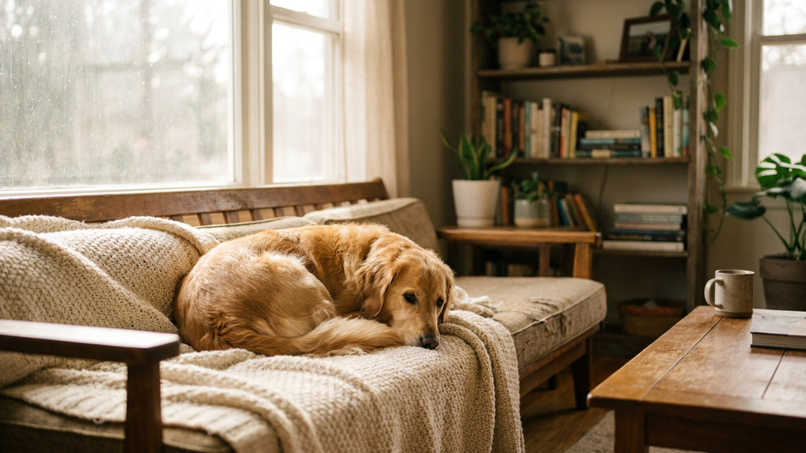

Вы открываете дверь — и собака уже тут, с мячом или плюшевым уткой в зубах, хвост метёт пол. Это не просто милая привычка. За ней стоят сразу несколько слоёв поведения: от искренней радости до грамотного самоконтроля. Ниже — почему собака так делает, что это говорит об отношениях с вами и как реагировать, чтобы поведение развивалось в нужную сторону.
🐾 У вашей собаки так же?
Расскажите в AnimaLife, как ведёт себя ваш питомец, — приложение объяснит причину и даст пошаговый план. Бесплатно, без записи к специалисту.
Разобрать свой случай → Разобрать в MAX →
У вас iPhone? AnimaLife есть в App Store
Это поведение не один рефлекс, а целый набор мотивов — иногда несколько сразу.
Собака, которая встречает с игрушкой, демонстрирует здоровую привязанность и базовый самоконтроль. Она рада вашему возвращению — это само по себе важно для оценки качества отношений. При этом она нашла способ выразить радость без прыжков и хаоса.
Такое поведение чаще встречается у собак, которых не наказывали за возбуждение при встрече, а мягко переключали. Игрушка в зубах — результат того, что собака научилась регулировать своё состояние, пусть и не вполне осознанно.
Иногда собака начинает требовать игры сразу при входе каждый раз и не успокаивается, пока вы не включитесь. Если ритуал превращается в ультиматум — нужна мягкая коррекция.
Это не строгость ради строгости — это помощь собаке научиться регулировать возбуждение, что делает её комфортнее в любых ситуациях.
🐾 Хотите понять, что собака говорит вам?
Опишите ситуацию или пришлите видео в AnimaLife — AI разберёт поведение вашего питомца и подскажет, что делать. Бесплатно, ответ за минуту.
Разобрать поведение → Разобрать в MAX →
У вас iPhone? AnimaLife есть в App Store
🐾 Понравился разбор?
Подпишитесь на канал — каждый день разбираем по одному тревожному симптому у кошек и собак: что в пределах нормы, а когда пора к врачу. Подпишитесь, чтобы не пропустить разбор, который может спасти здоровье вашего питомца.